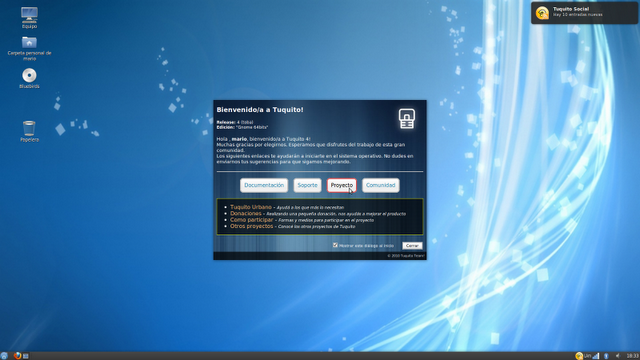
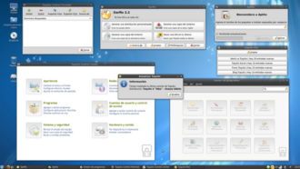

Tuquito fue una distribución GNU/Linux originaria de Argentina y basada en Debian GNU/Linux y Ubuntu, que implementa la tecnología LiveCD(arrancadesde un CD), en su última versión incluye un software que permite al usuario crear un LiveUSBy así poder guardar los cambios realizados. También puede instalarse en su PC mediante dos tipos de instalación: completa o básica, teniendo todo configurado y listo en su rígido en un tiempo mínimo.

Fue una de las distribuciones que funcionaba en el proyecto OLPC y las Classmate utilizadas en educación.
Cuenta con 2 Gigabytes de aplicaciones en un disco compacto normal, con una selección de paquetes en las áreas de ofimática, multimedia, Internet, programación, ciencias, etc.
Tuquito (insecto de abdomen luminiscente, más conocido como Luciérnaga - Lampyridae -) es una distribución GNU/Linux proveniente de la ciudad de Tucumán, creada por Ignacio Díaz, Chris Arenas, y Mauro Torres, este último, creador de Garfio, herramienta para la creación de distribuciones LiveCD como Tuquito. Su última versión fue desarrollada por Mauro Torres y Mario Colque, ambos desarrolladores de la nueva versión de Garfio. Patricio Prieto Garay fue el desarrollador de TuquiGrub y Tuquito TED 2016.
El julio de 2010 fue lanzada Tuquito 4 "Toba". Tuquito 5 "Pampa" es una edición basada en los binarios de Ubuntu 11.04, por lo que adopta muchas de sus características. Tuquito TED 2016 (Tuquito Debian Edition) es una edición basada en los binarios de Debian 9 (testing). Solo se lanzó una versión beta.

Algunas aplicaciones desarrolladas por el equipo de Tuquito: